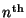
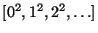
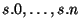
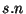

Next: Input/Output
Up: User's Guide
Previous: Arithmetic
Contents
Index
SALLI provides 4 data structures having very similar functionalities:
List T provides linked lists whose entries are of type T,
Array T and CheckingArray T both provide
arrays whose entries are of type T,
and Set T provides finite sets whose entries are of type T,
all of them of category BoundedFiniteLinearStructureType T.
In addition, a less rich data structure is PrimitiveArray T,
which provides C-like arrays whose entries are of type T and is of
category PrimitiveArrayType T.
All of those data structures can be created by explicitly listing a
finite number of elements, for example
or by bracketing a generator, for example
In addition, the function new
also allows structures to be created, and the constant
empty
returns an empty structure. The individual elements can
be accessed via s.n where s is a data structure and
n an index. The indexing scheme and the bound-checking scheme
both depend on the structure:
List and Set are 1-indexed, while
Array, CheckingArray and PrimitiveArray
are 0-indexed. In addition,
CheckingArray checks whether the index is within the range
of the array, while List, Set, Array and
PrimitiveArray do
not perform this check. If you need to know the indexing scheme at runtime,
or want to write index-independent code, the firstIndex constant
returns the index of the first element of a structure.
The general form for iterating efficiently over a
BoundedFiniteLinearStructureType is
for variable in structure
| condition repeat { ... }
where ``| condition'' is optional. This is available
for List, Set, Array and CheckingArray
but not for PrimitiveArray.
Aliases to substructures can be created via the
+ operation,
which shifts the start of any structure without copying, and for
an array a, a(n,m) returns the subarray a.n
through a.m without copying.
There are classical trade-offs between the various array types:
the only difference between Array and CheckingArray
is that the latter checks each access and the former does not. Since
they both offer the same exports, you can use one during the development
and testing phase, and then switch to the other for releasing your code.
Those two types, being of category ArrayType are
significantly richer than PrimitiveArray.
The latter is however compatible with C arrays and
generates more efficient code when accessing its elements.
In order to benefit from the advantages of all those types,
SALLI provides the data function,
which returns the data of an Array or CheckingArray
as a PrimitiveArray without copying.
It is thus possible to use Array or CheckingArray
in your code, making sure to
apply data to it before accessing elements in a loop.
For example, the following function efficiently computes the sum
of all the elements with even indices of an array of machine integers:
evenSum(a:Array MachineInteger):MachineInteger == {
import from MachineInteger; -- for the index i
import from PrimitiveArray MachineInteger;-- for accessing the elements of p
p := data a; -- for efficiency (optimized code)
sum:MachineInteger := 0;
for i in 0..#a by 2 repeat sum := sum + p.i;
sum;
}
Conversely, the function array
creates an Array or CheckingArray
from a PrimitiveArray without copying.
Note that the
generator functions
in Array and CheckingArray use the data
function, so iterating an Array or CheckingArray a via
for x in a repeat { ... }
is as efficient as using a PrimitiveArray.
Note that the debug version of SALLI performs bound checking on
accesses into all 3 types of arrays
(see the subsection on debugging for more
information on using the debug library).
Since String has the category
BoundedFiniteLinearStructureType Character,
the above functionalities
are also applicable to strings. For example,
for c in "hello" repeat { ... }
assigns successively the characters 'h', 'e', 'l', 'l' and 'o' to c,
and strings can be created from Generator Character.
Note that String and PrimitiveArray Character
are not interchangeable, since the former is packed and not the latter.
Similarly, chunks of memory viewed as byte arrays are provided by
either one of PrimitiveMemoryBlock,
MemoryBlock or CheckingMemoryBlock. Those types
are to be used for buffers rather that PrimitiveArray Byte,
which is not interchangeable with PrimitiveMemoryBlock.
Infinite linear structures are provided by the type
Stream T, of category LinearStructureType T.
There are several ways to create streams, the easier ones being via an
unbounded iterator, or via a function that computes its
 element.
For example,
import from MachineInteger, Stream MachineInteger;
sqr1 := [n^2 for n in 0..];
sqr2 := stream(0, (n:MachineInteger):MachineInteger +-> n^2);
are two different ways to create the infinite stream
.
Streams can be iterated, yielding loops whose duration cannot be predicted
in advance, so using a parallel finite iterator or a termination condition
inside the loop is advisable. Finally, streams are lazy in that 
are computed only when  has been specifically resquested, and elements
are never recomputed a second time.
Hash tables are provided by the HashTable type and are created
via the table function, as in
t:HashTable(String, MachineInteger) := table 1000;
The hash function defaults to the one provided by the type of the keys
if it has HashType, but can be overridden by providing your
own as last argument to the hash table type constructor, as in
t:HashTable(SingleFloat, MachineInteger, h) := table 1000;
where h any function producing machine integers from machine
floats. Providing the hash function is required when the type of
the keys does not have HashType.
Next: Input/Output
Up: User's Guide
Previous: Arithmetic
Contents
Index
Manuel Bronstein
2000-12-12